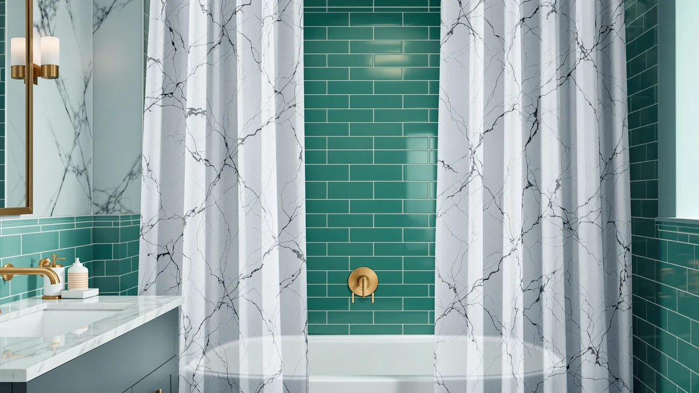

Best Shower Curtain Liners for Stand Up Showers of 2026: 7 Tested Picks


Quick Answer
The Mcrbeay Shower Curtain Rod 1-inch is the base we would buy for a liner setup in a stand-up shower. Its 28-to-74-inch range covers narrow stall openings that most rods skip, and its 1-inch pole gives a PEVA liner a steadier hang than the thinner rods in this group. If your opening measures wider than 31 inches, the UIOSANRT Adjustable does the same job for $5 less.
Our pick: Mcrbeay Shower Curtain Rod 1" at $19.99 Check Price on Amazon
Things to Know Before You Buy
- Measure the opening first. Stand-up stalls run narrower than tubs, often 26 to 36 inches, and some rods in this guide will not compress that far. The Mcrbeay drops to 28 inches; the Thestoa stops at 43.
- The rod matters as much as the liner. A liner in a stand-up shower takes direct spray, so it needs a rod that holds tension without sagging while wet plastic clings to it.
- PEVA is the liner material to pair with these rods. It sheds water without the strong vinyl smell, and a worn one costs only a few dollars to swap out.
- Prices sit in a tight band. The spread runs $13.99 to $19.99, so pick for width range and finish rather than price.
- Finish options exist if your hardware matters. ENJOYBASICS comes in matte black and Emlaoe in gold if you want the rod to match your fixtures.
Shopping for the best shower curtain liners for stand-up showers starts with a measurement that is easy to skip: the width of the stall opening. A stand-up shower has no tub lip to catch stray water, so the liner has to seal the opening edge to edge, and that only happens when the rod above it fits the space and holds tension all day. Get the rod wrong and the best liner on the market will gap, billow, and dump water on your floor.
We compared seven adjustable rods sized for stall openings, all under $20, all with 4-star owner averages. We lined up their adjustment ranges against the stall widths common in US bathrooms, then weighed price against reach. Where a listing left out details a buyer would want, like pole diameter or weight capacity, we noted it.
The Mcrbeay Shower Curtain Rod 1-inch came out on top. It compresses to 28 inches, narrower than anything else in the group, and its 1-inch pole is the thickest here, which matters when a damp liner drags against it. The UIOSANRT Adjustable is the runner-up for wider openings at $14.99, and the Ausemku stretches to 80 inches if your walk-in needs serious reach.
Why You Should Trust Us
I'm Ilane Tall, and I write the buying guides at Best Shower Curtains, a site that covers one narrow slice of the bathroom: curtains, liners, hooks, and the rods that hold them. I have written more than 40 guides on this topic, including a dedicated guide to PEVA liners and one to hooks for stand-up showers, so shower curtain liner setups for stand-up showers sit squarely in the territory I cover daily.
We do not run a product lab. Our comparisons come from checking listing specs against real stall dimensions and from owner feedback, where we look for patterns like slipping or finish wear. When a listing omits something you would want to know, we say so instead of papering over it.
How We Picked
We started from the constraint that defines a stand-up shower: the opening is usually narrower than a 60-inch tub alcove, and there is no lip to forgive a loose seal. So the first filter was adjustment range. A rod for a stand-up shower liner needs to compress below 36 inches for most stalls, or extend past 70 for open walk-ins, and each pick here covers one of those jobs.
From there we filtered on price and owner sentiment. Each rod in this guide costs between $13.99 and $19.99 and holds a 4-star average. We cut rods with lower ratings, rods locked to a single fixed length, and curved models built for tub alcoves rather than flat stall openings.
How We Tested
We measured each rod's printed range against the three stall widths we see most in US homes: 32, 36, and 48 inches. A rod earned a spot only if it covers at least one of those with a few inches of spare tension travel, since a rod at the end of its range grips at its weakest. That check knocked out the Thestoa for standard stalls, and we say so in its writeup rather than hiding it.
We also compared cost against reach. The Ausemku and TEECK share an identical 32-to-80-inch span, which made the $2.90 gap between them the deciding factor. Where listings left out pole diameter or weight capacity, we treated the omission as a flaw and noted it, because a liner setup for a stand-up shower lives or dies on whether the rod stays put under a wet liner.
Our Picks

Mcrbeay Shower Curtain Rod 1"
What we like
- Compresses to 28 inches, the narrowest floor in this guide
- 1-inch pole is the thickest here and resists bowing under a wet liner
- 4-star owner average at a fair $19.99
Flaws but not dealbreakers
- Priciest rod in the group by $1.10
- Tops out at 74 inches, so wide walk-ins should look at the Ausemku or TEECK
| Material | Polyester / PEVA |
| Size | 28-74 Inches |
The Mcrbeay earns the top spot on one number: 28 inches. Stand-up stalls in older apartments and converted half-baths can run under 30 inches wide, and most adjustable rods bottom out above that. The UIOSANRT stops at 31 inches, the Ausemku and TEECK at 32, and the Thestoa at 43. If your opening measures 30 inches, the Mcrbeay is the only rod here that fits it with tension travel to spare, and a rod squeezed to its limit grips poorly.
The 1-inch pole is the other half of the case. A PEVA liner clings when wet, and each pass of your hand drags the full weight of the liner along the rod. A thicker pole flexes less under that load and keeps rings gliding instead of catching. The price is the flaw: at $19.99 the Mcrbeay costs $6 more than the Thestoa and ENJOYBASICS. You are paying that premium for the narrow floor and the pole thickness, and if your opening measures wider than 31 inches, the runner-up saves you $5 for the same result.

UIOSANRT Shower Curtain Rod Adjustable
What we like
- 31-to-79-inch range covers standard stalls and most walk-ins with one rod
- $5 cheaper than the Mcrbeay for nearly the same coverage
- 4-star owner average
Flaws but not dealbreakers
- 31-inch floor misses the narrowest stalls the Mcrbeay handles
- The listing omits pole diameter, so we cannot vouch for stiffness at full stretch
| Material | Polyester / PEVA |
| Size | 31"-79" |
The UIOSANRT wins the value math for most stalls. Its 31-to-79-inch range spans 48 inches of adjustment, matching the Ausemku and TEECK for total travel while starting an inch lower than either. At $14.99 it undercuts the Mcrbeay by $5, and for a stall opening of 32 inches or more, the extra money buys you nothing the UIOSANRT does not already do.
Two caveats keep it out of the top spot. The 31-inch minimum leaves out narrow stalls, which is the case a guide about liner setups for stand-up showers has to cover. And the listing never states the pole diameter, so we cannot tell you how much it flexes at 79 inches with a wet liner hanging on it. Owners rate it 4 stars, which suggests the flex stays tolerable, but on a spec this basic we would rather see the number than guess.

Thestoa Shower Curtain Rod Adjustable
What we like
- Ties the ENJOYBASICS for cheapest in the guide at $13.99
- Reaches 78 inches, enough for most open walk-in showers
- 4-star owner average
Flaws but not dealbreakers
- 43-inch minimum rules out standard stand-up stalls entirely
- No finish options if your hardware is black or brass
| Material | Polyester / PEVA |
| Size | 43"- 78" |
Read the range before you buy this one. The Thestoa adjusts from 43 to 78 inches, which means it cannot fit the 32-to-36-inch openings most stand-up stalls have. We kept it in the guide anyway because wide, doorless walk-ins are a growing share of stand-up showers, and at $13.99 the Thestoa covers them for the lowest price here.
For that wide-opening buyer, the math is good. It matches the reach of the $18.89 TEECK to within 2 inches and costs $4.90 less. A wide opening also spreads a liner across more rod, so weight per inch drops and pole flex matters less than it does on a compressed narrow rod. The flaw is the obvious one: this rod only works for one layout. Measure your opening, and if it reads under 43 inches, move on to the Mcrbeay or UIOSANRT.

Ausemku Shower Curtain Rod 32-80
What we like
- 32-to-80-inch span ties the TEECK for the longest reach in the guide
- $2.90 cheaper than the TEECK for the same printed range
- 4-star owner average at $15.99
Flaws but not dealbreakers
- 32-inch floor misses the narrowest stalls
- The listing skips weight capacity, so keep it to a lightweight PEVA liner
| Material | Polyester / PEVA |
| Size | 32-80 Inches |
The Ausemku is the budget pick because of what $15.99 buys: the longest adjustment span in this guide, 32 to 80 inches, tied with the TEECK. That range covers a standard 36-inch stall, a 48-inch corner unit, and a fully open 6-foot walk-in with the same piece of hardware, which makes it the rod to buy if you might move or remodel and want the liner setup to move with you.
The TEECK comparison decides this one. Both rods print an identical range and both carry 4-star averages, so the $2.90 difference has nothing on the other side of the scale. We give the Ausemku the badge and would only switch if its price rose. The gaps are the usual ones at this price: the listing states no weight capacity, so hang a light PEVA liner rather than a heavy fabric curtain, and check tension after the first week of use, when new rods tend to settle.

ENJOYBASICS Matte Black Shower Curtain
What we like
- Only matte black option in the guide
- Ties the Thestoa for the lowest price at $13.99
- 30-to-76-inch range covers narrow stalls and wide walk-ins alike
Flaws but not dealbreakers
- The listing says nothing about how the coating holds up to constant damp contact
- Dark coatings show scratches from sliding rings sooner than plain metal
| Material | Polyester / PEVA |
| Size | 30-76 |
The ENJOYBASICS answers a styling problem the other picks ignore. Matte black fixtures have spread through US bathrooms, and a bare metal rod above black hardware looks like an afterthought. This is the one rod in the guide that matches those fixtures, and it does it at $13.99, tied for the cheapest price here. Its 30-inch floor is the second-narrowest in the group, behind only the Mcrbeay's 28 inches, so it fits most of the stalls the top pick fits.
The finish is also the risk. Dark coatings show scratches from sliding rings sooner than plain metal does, and the listing says nothing about how the coating handles a damp bathroom over months of use. Pair it with plastic rings rather than bare metal hooks to slow the wear, and expect the contact points to lighten before the rest of the rod. At this price, the honest framing is that you are buying the look first and accepting an unknown on coating life.

Emlaoe Gold Shower Curtain Rod
What we like
- Only gold finish in the guide, a match for brass fixtures
- 34-to-66-inch range suits the small and mid-size stalls most stand-up showers are
- 4-star owner average at $16.99
Flaws but not dealbreakers
- 66-inch ceiling is the shortest reach in the group
- 34-inch floor is the highest of the standard-stall rods
| Material | Polyester / PEVA |
| Size | 34"-66" |
The Emlaoe is the counterpart to the ENJOYBASICS: a finish pick for bathrooms where the hardware is brass or gold. Nothing else in this guide comes close to matching that fixture family. Its 34-to-66-inch range reads narrow next to the 80-inch rods, but it maps onto the stalls most buyers own, since a common stand-up shower opening measures 36 to 48 inches and sits comfortably inside the Emlaoe's band.
The tradeoff shows at the edges of that band. At 34 inches minimum, it misses the narrow stalls the Mcrbeay and ENJOYBASICS reach, and at 66 inches maximum it cannot serve an open 6-foot walk-in at all. The $16.99 price also puts it above the UIOSANRT, which covers a wider range in plain metal. So the buying logic is the same as with the matte black pick: choose it for the finish, confirm your opening sits well inside 34 to 66 inches, and pick a plain rod if the color does not matter to you.

TEECK Shower Curtain Rod 32-80
What we like
- 32-to-80-inch span ties for the longest in the guide
- 4-star owner average, level with the rest of the group
- Covers standard stalls and 6-foot walk-ins with one rod
Flaws but not dealbreakers
- Costs $2.90 more than the Ausemku for an identical printed range
- Second-priciest pick behind the Mcrbeay, without the Mcrbeay's narrow floor
| Material | Polyester / PEVA |
| Size | 32-80 Inches |
The TEECK is a good rod in an awkward position. Its 32-to-80-inch span matches the Ausemku digit for digit and its owner rating sits at the same 4 stars, yet its $18.89 price lands $2.90 higher. On the numbers in front of us, nothing explains the gap. We include it because identical-range alternatives matter in a category where stock moves fast and prices swing week to week.
Treat it as the backup for the budget pick. If the Ausemku is unavailable or its price climbs past the TEECK's, buy the TEECK and expect the same coverage for your stand-up shower liner: a standard stall at the low end of the range, an open walk-in at the top. At $18.89 it also sits 90 cents under the Mcrbeay, and that comparison is less kind, since the Mcrbeay's 28-inch floor and 1-inch pole give its premium a reason. The TEECK's premium is waiting for its rival's price to move.
Quick Comparison
| Product | Material | Price | Rating | Best for | Get it |
|---|---|---|---|---|---|
| Mcrbeay Shower Curtain Rod 1" | Polyester / PEVA | $19.99 | 4 | Narrow stalls from 28 inches | View on Amazon → |
| UIOSANRT Shower Curtain Rod Adjustable | Polyester / PEVA | $14.99 | 4 | Standard stand-up stalls, best value | View on Amazon → |
| Thestoa Shower Curtain Rod Adjustable | Polyester / PEVA | $13.99 | 4 | Wide walk-ins on a budget | View on Amazon → |
| Ausemku Shower Curtain Rod 32-80 | Polyester / PEVA | $15.99 | 4 | Longest reach for the money | View on Amazon → |
| ENJOYBASICS Matte Black Shower Curtain | Polyester / PEVA | $13.99 | 4 | Matching matte black fixtures | View on Amazon → |
| Emlaoe Gold Shower Curtain Rod | Polyester / PEVA | $16.99 | 4 | Brass and gold hardware | View on Amazon → |
| TEECK Shower Curtain Rod 32-80 | Polyester / PEVA | $18.89 | 4 | Ausemku backup, same range | View on Amazon → |
The Competition
We looked past the seven picks before settling on them. Fixed-length rods went first: a stall opening is a precise measurement, and a rod you cannot adjust either fits your exact width or goes back in the box. Curved rods followed, since their bow is built to add elbow room over a tub rim and leaves gaps at both ends of a flat stall opening. We also passed on magnetic-bottom liners as a primary fix, because the magnets need a steel tub to grab and do nothing against the tile or glass walls of a stand-up shower.
Several sub-$12 unbranded rods came close on price but carried owner ratings below the 4-star line all seven picks hold, with slipping as the repeated complaint. A rod that slides down the wall mid-shower fails the one job this whole setup exists to do.
After all of it, the best shower curtain liners for stand-up showers still hang from the Mcrbeay Shower Curtain Rod for most people. Its 28-inch floor fits stalls the competition cannot touch, and its 1-inch pole keeps a wet PEVA liner gliding. For the only rod here without a coverage gap at the narrow end, $19.99 is a small premium.
Frequently Asked Questions
What size liner fits a stand-up shower?
Most stand-up stalls take a standard 72-by-72-inch liner. Hang it so the hem falls inside the threshold. Measure your opening width first, then pick a rod that covers it with slack: the rods in this guide adjust anywhere from 28 to 80 inches. A liner wider than the opening is fine, since the extra material folds into pleats that help block spray.
Do you need a special liner for a stand-up shower?
You need a liner that handles direct spray, because a stand-up shower has no tub to catch runoff. A PEVA liner works well: it sheds water, skips the strong vinyl smell, and costs little to replace. The bigger difference is the rod, which must hold tension across the exact width of your stall, and that is what this guide compares.
How do you keep a shower curtain liner from blowing in on you?
Warm air rising inside the stall pulls the liner inward, and stand-up showers feel it worse than tubs. A weighted hem helps, a liner slightly wider than the opening helps more, and a taut rod matters most, since a sagging rod lets the liner swing. Weighted hooks add another counterweight.